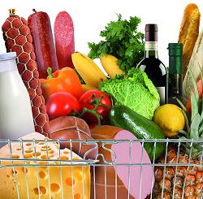

Food Store Sales This Week
This week, we have pleanty of your favorite summer vegetables on sale. All the vegitables we sell at the food store are grown right here, so you know our vegitables are always fresh and delicious. Although our produce is always on sale, just check below to see the savings compared to last week.
Here's just a few of the items on sale this week:
- potatoes reduced by 50¢ per bag
- carrots reduced by 40¢ per pound
- iceburg lettuce reduced by 30¢ less per head
- string beans reduced by 35¢ per pound
Although we love to see you spend time at the Food Store, we know that you have other laces to be. We've introduced new self-checkout registers at all our Food Stores. Just swipe your Food Store savings card and you are ready to start saving on everythingthat's on sale in the store. If you want to really zip in and out of our store, just grab a price scanner on the way in and take a few paper shopping bags as well. Scan the items before you place it in a bag. As you travel through the store, the price scanner will alert you on whats on sale in that aisle. You'll get discounts on items you have in your purchase history, and you will get coupons for items that are not on sale.
Contact us
Food Store
25 Rocky Mountain Drive
Suite 345
Boulder, CO 80333
877-345-4566